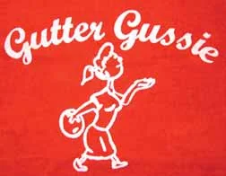
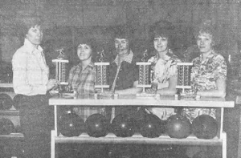
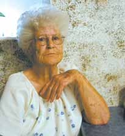
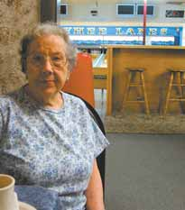

The first tournament
The anniversary history dates the first tournament to 1957, when the club joined efforts with the Idaho State Women’s Bowling Association and attracted 150 participants. [1]
Celebrating Idaho women bowlers,
friendship, and fun for more than 70 years.
Bowl a sanctioned 225 game or 550 series.
Apply within 365 days of your qualifying score.
Lifetime membership is $20.
From Gussie's scrapbook
Pocatello, Idaho
Good bowling.
Better company.
A lasting tradition.
The Idaho Gutter Gussie Club
Founded in Pocatello in 1955, the Idaho Gutter Gussie Club grew from a simple idea: celebrate women's bowling achievements and build friendships along the way.
Find tournament information, rules, and past results.
Have a question? Get in touch.
idahoguttergussieclub@gmail.comA great score. A lifetime of friendship.
For women bowlers in Idaho. Qualifying scores must be bowled in a sanctioned Idaho league or tournament. No-tap scores do not qualify.
Start with a little about you.
Check your details or edit a section.
Every application is checked by the club against your recap or standing sheet and fee before membership is approved.
Your application was sent to the club.
Keep your reference number handy. Questions? Email the club.
No. You need a 225 scratch game or a 550 scratch series from a sanctioned Idaho league or tournament. No-tap scores do not qualify.
Apply within 365 days of your qualifying score.
No. The $20 fee covers lifetime membership. Contact the club for payment instructions.
Use a recap sheet or standing sheet. Upload a copy or mail it with your $20 fee. Contact the club for mailing instructions.
Email idahoguttergussieclub@gmail.com with questions about qualifying scores or the application process.
Entry information, rules, and results for the annual club tournament.
Current tournament details will be posted when available.
Ask the club about the next tournament ↗Choose an event to open its results document.
Results have conflicting official and unofficial labels. Confirm their status with the club.
A great score opened the door.
Friendship kept it open.

A simple idea.
A lasting tradition.
According to the club’s 2025 anniversary history, a group of Pocatello women founded the organization in 1955. The original qualification was a 225 game or a 550 three-game series, with a $10 lifetime membership fee. See the Join page for current membership details. [1]
The anniversary account recalls Emma Smith of Pocatello writing to WIBC secretary Emma Phaler for advice on sustaining the club. Phaler reportedly encouraged tournament-fee funding while questioning whether the qualifying scores might limit membership. The original correspondence has not been located. USBC’s biography confirms Phaler’s service as WIBC secretary from 1927 to 1965. [1][2]
The anniversary history dates the first tournament to 1957, when the club joined efforts with the Idaho State Women’s Bowling Association and attracted 150 participants. [1]
A newspaper retrospective records Malad hosting the tournament under chairman Ione Jones. Preliminary results placed two local teams first and second in the B division. [3]
A Soda Springs invitational drew 24 teams from Malad, Montpelier, Preston, and Soda Springs. Nina Stuart was honored for helping establish that invitational in 1981. [5]
Ten Malad Gutter Gussies repainted Malad Bowl before an invitational. The volunteers included Vicki Ekstrom, Linda Daniels, and Carla Williams—names also found in the earlier championship photograph. [7]
Idaho USBC documents identify the competition at Sunset Bowl in Buhl as the 68th Annual Idaho Gutter Gussie Club Tournament, held October 5–27, with four-woman teams, doubles, and singles. [8]
The club marked 70 years from its recorded 1955 founding—a milestone built on achievement, volunteer work, and friendships across generations. [1]

Dawn Whitney, longtime member and former secretary
The Owyhee Avalanche, July 23, 2008. [6]
In 2008, Whitney reported more than 13,000 membership cards issued since the club began—a lifetime total, not an active membership count.
As Homedale prepared to host at Owyhee Lanes, the newspaper described hundreds of expected bowlers and plans for Betty Ishibashi to roll the opening ball. [6]


Portraits: The Owyhee Avalanche, July 23, 2008, page 18A.
The scores, the stories, and the friendships continue.
Become a Gutter Gussie →Explore the tournament ↓Founding details come from the club’s 2025 anniversary history. Newspaper reports and tournament records document later events.
Club’s 2025 anniversary account.
USBC Hall of Fame biography.
The Idaho Enterprise, Looking Back, November 9, 2023.
The Idaho Enterprise, Looking Back, March 15, 2023.
Caribou County News, Looking Back at Pages from the Past, June 11, 2026.
The Owyhee Avalanche, July 23, 2008, page 18A.
The Idaho Enterprise, Looking Back, March 26, 2026.
Idaho USBC, 68th Annual Idaho Gutter Gussie Club Tournament.
Get in touch about membership, tournaments, or club history.
Idaho Falls
bishcand@yahoo.comPreston
tammybraegger@outlook.comNampa
idahoguttergussieclub@gmail.comShoshone
carole.sturgeon400@gmail.comA local connection across Idaho.
Malad
julie.green9699@gmail.comJerome
butterfly85.ss@gmail.comNampa
coach.deb@hotmail.comShare a memory, photograph, or piece of club history.
Honoring our Hall of Fame inductees.
Explore the honorees ↓Preston
Elmore County
Buhl
Browse by year, name, or community.
17 entries across 12 induction years
No matching honorees. Try another name, community, or year.
Discover the friendships and history that brought the club here.
Read our story →